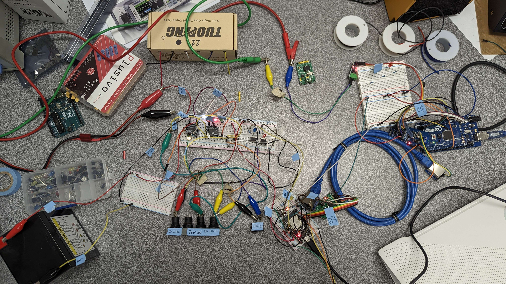

Hello! My name is Khushi Gupta. I am a rising undergad senior at the University of California, Irvine, studying Electrical Engineering. Navigate through this page to learn more about the projects I have worked on. Click on the links to see more indepth on each of the projects.
Contact me at: kigupta001@gmail.com
September 2023 - June 2024

Worked as an Electrical Engineering team member in 2023-2024. Participated in the international CanSat competition to create a payload that would be released 725 meters into the atmosphere, imitating a planetary probe landing sequence. Worked with a team of two electrical engineers to design a PCB via Altium compromising of all the required sensors as mandated by the competition. Helped design the layout of the board as well as solder three revisions of the board with consecutively lighter weights with each revision. Collaborated with both mechanical and controls subteams to ensure weight requirement was met and that the board was accurately functional through weekly meetings. Final revision consisted of mostly SMD components that were hand soldered. Won 4th place internationally, 2nd place in the US.
September 2023 - June 2024
Designined the sensor schematics and integrating the sensor system with the embedded systems. Worked on rigorous testing and documentation of those test results, ensuring that all the sensors can work cohesively together via a CAN bus system. Designed and executed preliminary tests to test if the sensors performed as desired before working towards complete integration onto a dashboard via Arduinos and a Raspberry Pi.
April 2022 - May2022

Automated oscilliscope to auto adjust frequency and fed results into a Python program to generate a graph that was used to verify the type and cutoff of the filter created by a circuit.
May 2022
Class focused on implementation and testing of harware devices to complete a certain task. In this lab, I implemented a design that utlized an equation to locate an accelerating object. This design contain combinational logic, state resgister, 8x16 register file, ALU, 16-bit Shift, 2-to-1 Selector, 16-bit output register, and 16-bit three-state buffer.
February 2022
Created a distance sensor using a phototransistor (IR reciever), IR emitter, and an LED. LED's brightness changed based on the distance from IR reciever and IR emitter pair.
November 2021
Created a "piano" circuit that could play three different tones utilizing a 555 timer.